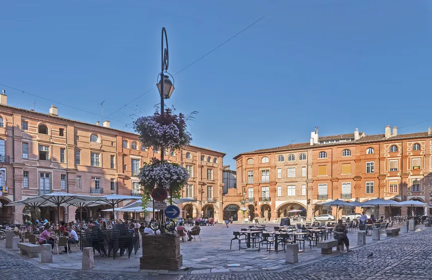

Places you have got to see
The Ingres Museum
This museum is dedicated to Dominiques Ingres, a painter, musician and sculptor native of the town.
He was reknown for his bronze sculpture and his love for playing the violin.
The Jardin des Plantes (Plants Garden)
This park is filled with native and imported plants in order to provide a botanical garden akin to the ones that were built during the 19th century throughout major european cities

The Place Nationale (National place)
Formerly known as the Royal Place it was renamed after the french revolution and was the most animated place in the city were the market and most events took place It has been modified lately by the city.